Gran formato.
Desde hace no muchos años, y gracias a los avances tecnológicos acontecidos en el sector, los pavimentos y revestimientos de gran tamaño gozan de una magnífica salud en cuanto a su instalación y calidad de material, y además permiten un gran abanico de opciones estéticas como de aplicaciones.
Superficies con dimensiones que oscilan alrededor de los 3’20×1’60 metros, y con grandes ventajas y posibilidades, cuando se instalan en fachadas de edificios, encimeras de cocinas, paredes y suelos en baños de gran tamaño, y en cualquier otro tipo de gran espacio, los pavimentos y revestimientos porcelánicos de gran formato favorecen una solución diferente y personalizable.
La desaparición de las visualmente molestas juntas, junto a la posibilidad de continuar en el interior con el mismo planteamiento desarrollado en el exterior de un edificio, son algunas de las ventajas de estos materiales, cuyo desarrollo e implantación no acaba sino de iniciarse.
Te proponemos un gran abanico de marcas de pavimentos y revestimientos porcelánicos de gran formato, dentro de nuestra oferta de materiales de alta calidad para suelos y paredes.
Y si lo que buscas no está en exposición, lo buscamos en la Bagnoteca, nuestra biblioteca de catálogos.
Novedades 202618
 Gran formato
Gran formatoCuando una rehabilitación no admite ni un gramo más de carga
Cada centímetro de revestimiento nuevo suma peso a una estructura que no se diseñó para admitirlo. Eso limita las opciones antes incluso de pensar en diseño.
Ahí entra TWO: un material de 2 mm que Laminam acaba de incorporar a su catálogo, técnicamente similar al porcelánico, pero ligero, fácil de manipular (se corta con cuchilla de vidrio) y flexible, con capacidad de curvarse en radios de hasta 3 metros.
Ideal para revestimiento y aplacado de mobiliario justo en los casos donde el peso es el problema.
De momento hay 15-20 referencias disponibles en este material, de las más de 150 del catálogo general. Fabricación sostenible, menos emisiones, transporte optimizado.

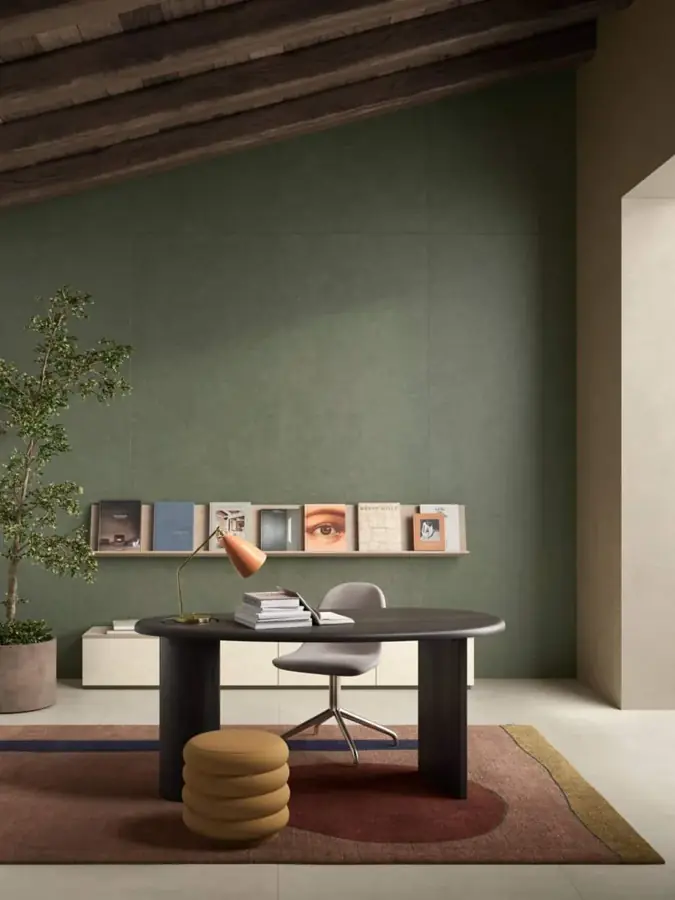
Gran formato¿Por qué el gran formato casi siempre se impone al entorno en vez de dialogar con él?
Cuanto más grande la superficie, más fácil que gane ella.
Gemini no lo hace.
Es la respuesta de Laminam: una colección inspirada en los ciclos entre tierra y cielo, que refleja el paisaje en lugar de taparlo.
- Gran formato
Percelánico de gran formato Widegres – Coem ceramiche
WideGres 280 amplía la gama de porcelánico de gran formato con placas de 120 × 280 cm, pensadas para generar superficies interiores continuas y lecturas espaciales más limpias.
El gran tamaño de los azulejos reduce juntas y refuerza la percepción de unidad en paredes y suelos. Disponible en efectos piedra, mármol y hormigón, mantiene gráficos equilibrados y una alta estabilidad cromática.
Disponible en 44 tonalidades, 2 tamaños y 2 superficies, es una propuesta adecuada para proyectos que requieren precisión, continuidad visual y prestaciones técnicas constantes.
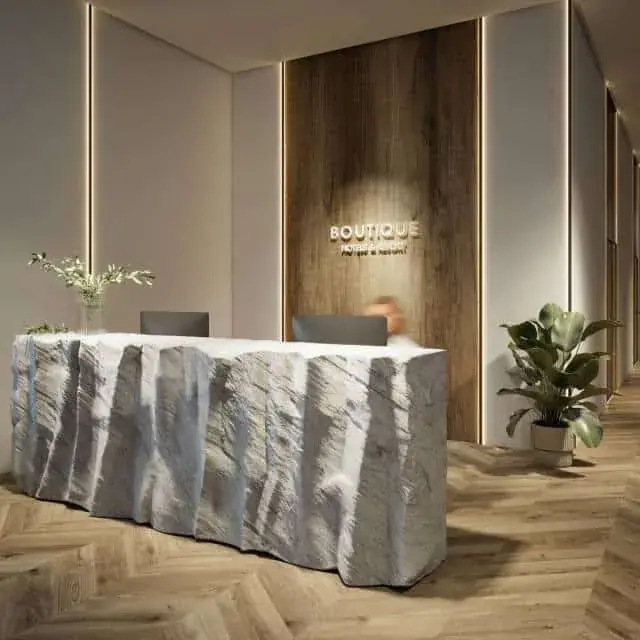
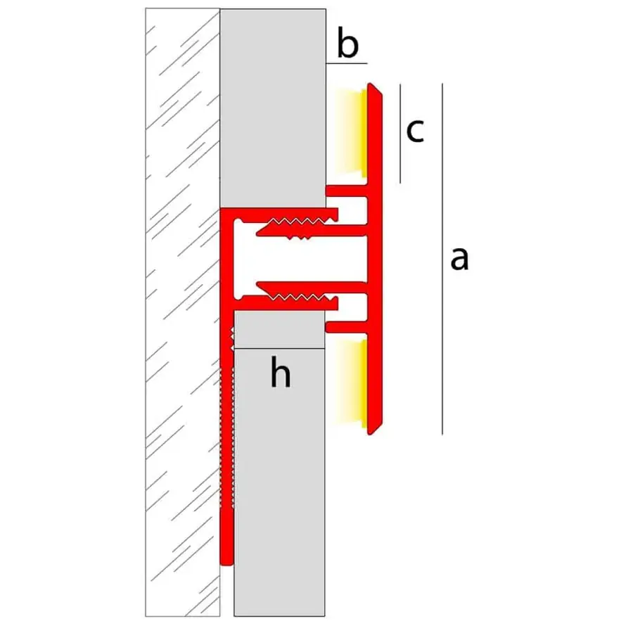
Gran formatoPerfil para pavimentos/revestimientos Novolistel Eclipse Sunset – EMAC
Perfil decorativo con iluminación indirecta que transforma paredes y techos en superficies dinámicas.
Diseñado para integrar tiras LED de forma oculta, proyecta una cortina de luz suave en ambas direcciones, creando ambientes relajados y sofisticados.
Compatible con revestimientos de 8 a 13 mm, es ideal para resaltar porcelánicos de gran formato y generar líneas de luz verticales u horizontales.
Disponible en negro, plata mate y blanco mate, aporta un detalle técnico con alto valor estético.
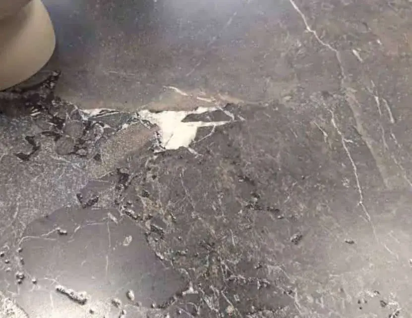
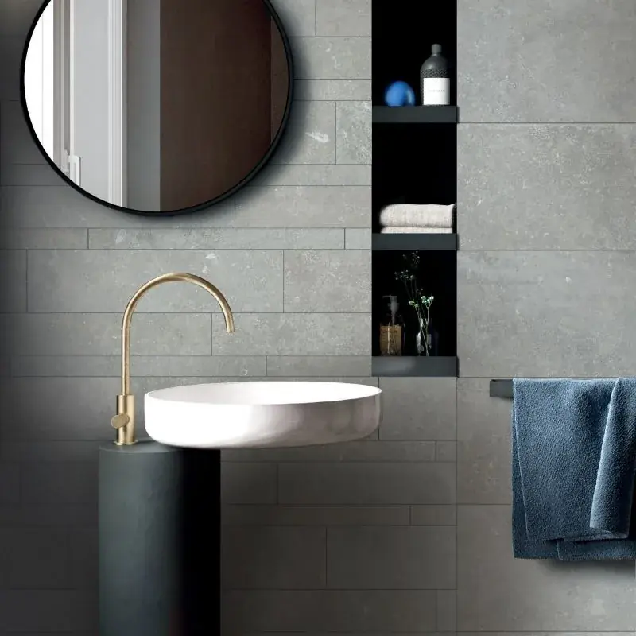
Gran formatoLosas gran formato imitación mármol y piedra – Flaviker.ABK
ABK presenta su última innovación en losas. Su formato en grandes piezas posibilita la máxima expresión de los materiales usados en su diseño, acentuando la sensación de naturalidad y originalidad.
La colección consigue un gran resultado a nivel perceptivo, 100% fiel a la realidad, imitando los detalles que caracterizan a la piedra y al mármol: grutas, vetas, líneas discontinuas, etc.
Además, gracias a la alta tecnología P.TECH utilizada durante el proceso de producción, la nueva línea de losas se caracteriza por ofrecer superficies suaves al tacto y fáciles de mantener, escalando hasta las primeras posiciones como la mejor opción para interiores y exteriores.
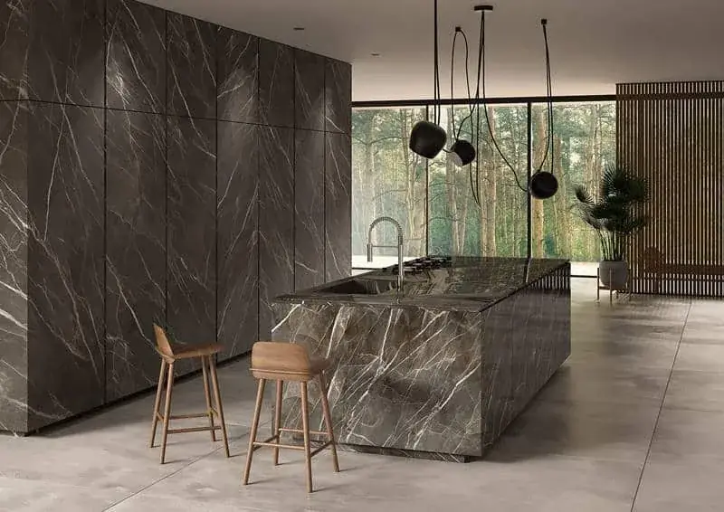
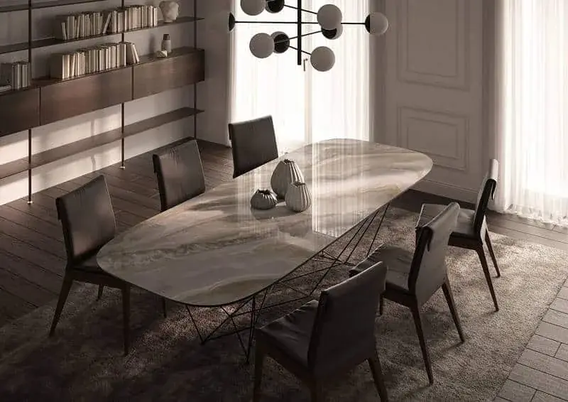
Gran formatoPorcelánicos gran formato Diamond – Laminam
Posicionada como marca referente en cuanto a calidad y durabilidad de sus materiales, Laminam presenta su última novedad en porcelánicos de gran formato, la colección “Diamond”.
El concepto que inspira esta nueva línea gira entorno a la perdurabilidad del tiempo. Sus creaciones transmiten momentos de bienestar únicos, que quedan grabados en la memoria de quienes las disfrutan. Momentos en los que la pieza resulta un elemento memorable.
Hechas con especial tacto y atención por el detalle, encontramos varias versiones para satisfacer cualquier gusto: en cemento, en madera, en piedra, en mármol…todas disponibles en gran formato e incluso a medida.
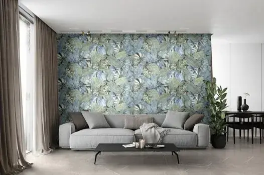
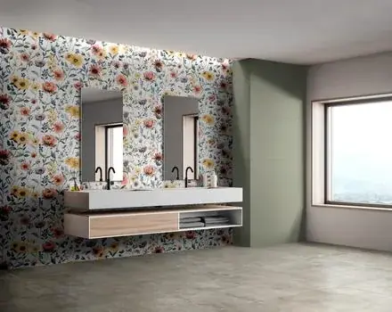
Gran formatoRevestimientos imitación papel pintado Papers – Ragno
Fiel a las tendencias que marcan el sector, Ragno apuesta fuerte por los motivos florales en el diseño de sus nuevos revestimientos de pared.
Así lo consolida con “Papers”, su última novedad hecha con tecnología Touch que imita al papel pintado. Una colección versátil donde reinan las texturas monocromáticas que se alternan, a su vez, con decoraciones botánicas y geométricas.
Su nueva propuesta en formato 60×180 es una puerta abierta a la creatividad, creando escenarios diferentes según la interpretación de cada uno y dotando de una gran personalidad a cualquier estancia: baños, salas de estar, dormitorios, locales, etc.
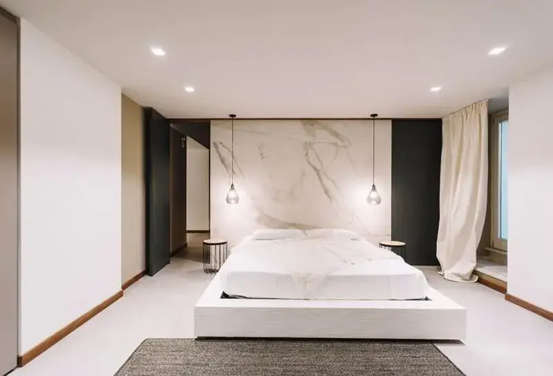
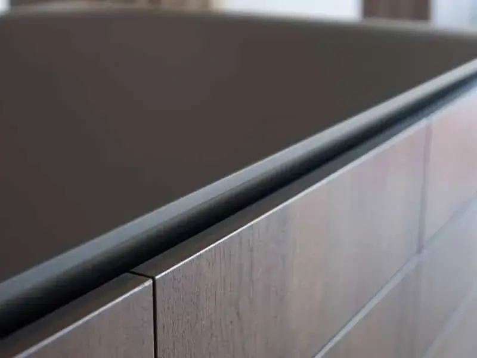
Gran formatoPavimentos de gran formato - Laminam
Laminam es uno de los pioneros de referencia del universo gran formato, ofreciendo al mercado una gama de diseños y calidades en el acabado de nivel superior.
En la actualidad, ha empezado a trabajar con materiales todo masa, con grosores de 30mm, con el objetivo de hacer encimeras, mesas y mobiliario de cocina y baño.
Destacamos Architectural (placa cerámica de 1000×3000 mm con 3 y 5 mm de espesor) ideal para revestimientos interiores y exteriores, y Furnishing&Design, tablas de cerámica de 1620x3240mm muy apreciadas para la decoración de superficies horizontales, tanto en baño como en cocina.
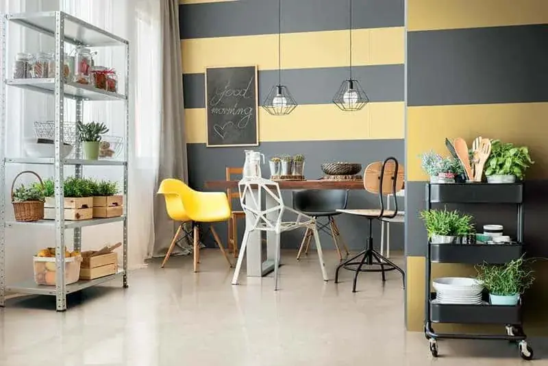
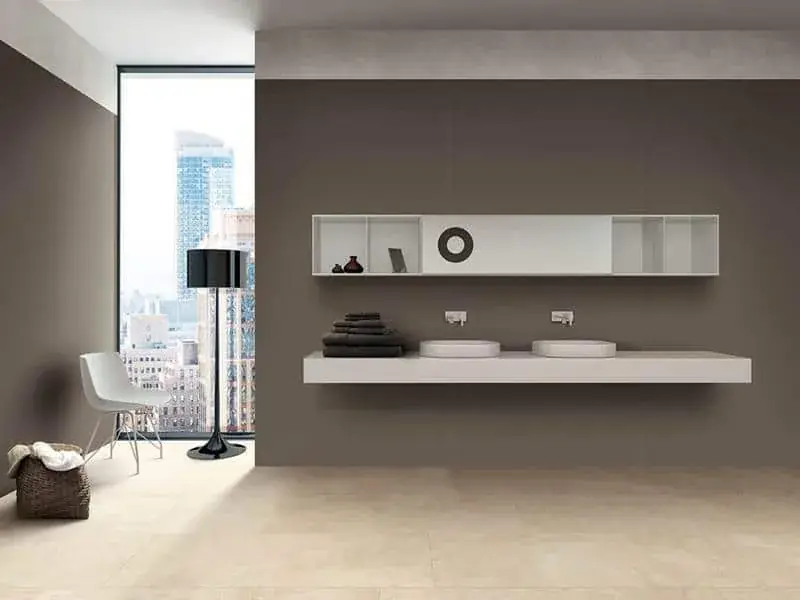
Gran formatoPavimentos y revestimientos Elemental Stone - Cerim
Como su propio nombre indica, Elemental Stone presenta gráficas de piedra natural, con tonos suave: cremas, blanco y gris.
Una propuesta inspirada en rocas sedimentarias para espacios interiores que se presenta en un tamaño máximo de 120×1200 y en diversos tipos de acabado superficial: Abujarado, Mate, Brillante, Grip y Mate – brillante.
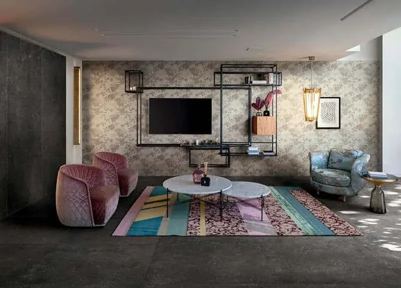
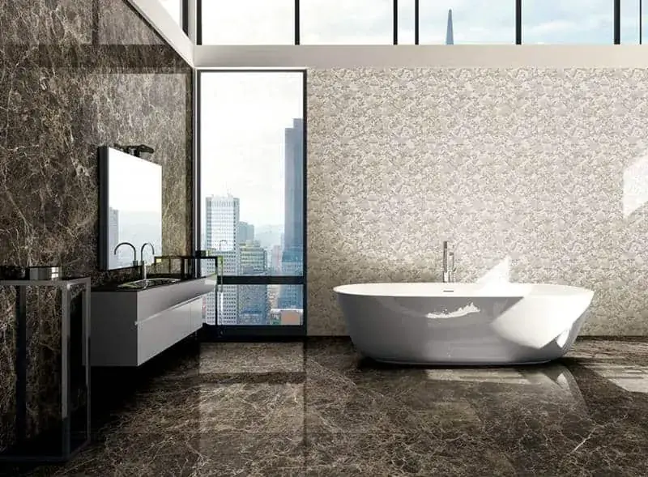
Gran formatoPavimentos y revestimientos gran formato I Filati - Rex
I Filati de REX te abre un mundo de estéticas textiles de la seda, sofisticadas, que evocan la elegancia veneciana. Geometría minimalista, estilo setentas en colores beige, verdes, granates y morados.
Una propuesta en grandes formatos Magnum 120×280, 120×240, 60×120 cm, de 6 mm de espesor, fabricada en gres porcelánico.
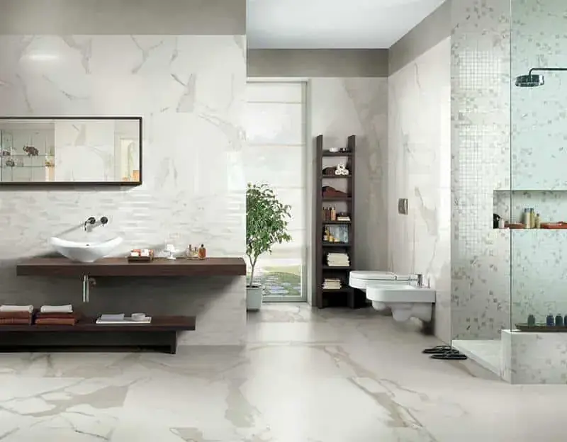
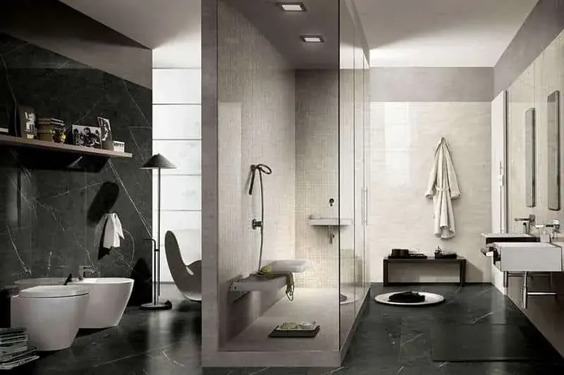
Gran formatoPavimentos y revestimientos porcelánico gran formato Antic Marble - Cerim
Cuando lo moderno y actual se funden con el clásico sabor de la más noble piedra natural.
Antic Marble te da la opción de crear contrastes espaciales de la mano de distintos formatos colores y matices, capaces de impregnar de distinción un baño, una recibidor, cocinas y comedores.
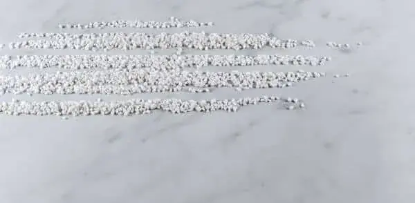
Gran formatoNuevo acabado pavimentos gran formato Antique - Neolith
No es necesario decir que gracias a este nuevo acabado, cualquier pavimento o revestimiento podrá incorporar “el paso del tiempo” con elegancia y verosimilitud, de forma artificial.
Junto a esta característica obvia y principal, también destacamos su tono mate y la textura suave.
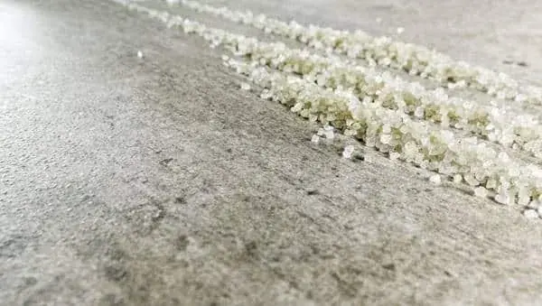
Gran formatoPavimentos y revestimientos porcelánicos de gran formato - Concrete Taupe - Neolith
El color marrón, tono cálido y el acabado desgastado, aportan a este porcelánico un carácter coherente con las tendencias actuales de diseño industrial. Al mirarlo tienes la sensación de que el proceso de oxidación ha sido natural (característica muy apreciada por aquellos y aquellas a las que le gusta esta estética).
Disponible en medidas de 6 y 12 milímitros, Concrete Taupe puede funcionar perfectamente en gran diversidad de emplazamientos, tanto de interior como de exterior.
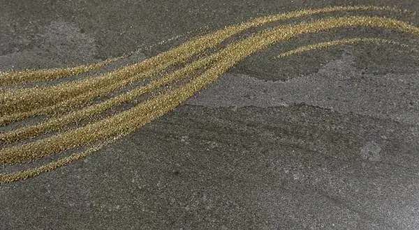
Gran formatoPavimentos y revestimientos porcelánicos gran formato Aspen Grey - Neolith
¿Has oído hablar de las montañas de Aspen en EEUU?
Se trata de un bello lugar donde la naturaleza destaca ahí donde mires. Teniendo esto en cuenta Neolith lanza esta pieza inspirada en la piedra natural y gris de Aspen, muy interesante para revestir interiories y exteriores, pavimentos, colocar en encimeras de cocina, en cuartos de baño e incluso en mobiliario.
Destaca su diseño que facilita la sensación de profundidad y aporta un potente caràcter estético. La tienes disponible en 6 y 12 milímetros.
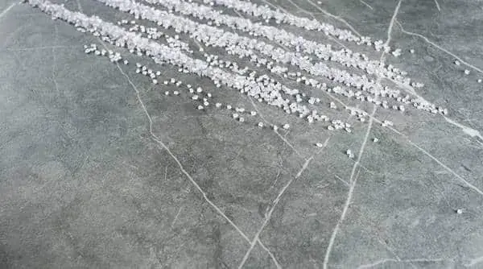
Gran formatoPavimentos gran formato Zaha’s Stone - Neolith
Ridiendo tributo a la famosa arquitecta Zaha Hadid, la marca Neolith ha diseñado este pavimento, que al verlo tienes la sensación de viajar a Irán.
Destacan, entre otras características, el diseño contemporáneo, su rico tono gris y las venas blancas gracias a las que resalta el fondo. Una pieza que tienes disponible en 6 y 12 milímitros
- Gran formato
Pavimentos gran formato Blanco Carrara - Neolith The Size
Disponible en espesores de 6 y 12 mm y en dos acabados, uno de trazado sutil y otro más contrastado, Blanco de Carrara pretende ser incluso mejor que la propia piedra natural.
Sus creadores, obvia decir que se han inspirado en esta, y después de analizar varias tablas procedentes de Italia, decidieron seleccionar las mejores partes de cada una, para conseguir un resultado de calidad y estética único.
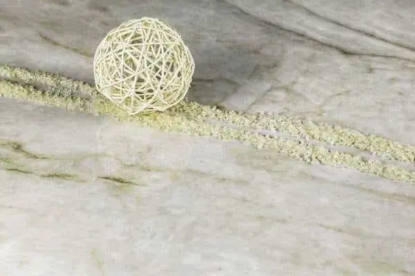
Gran formatoPavimentos y revestimientos de gran formato Taj Mahal - Neolith The Size
De este diseño óptimo para encimeras y baños, destacamos la gran riqueza de detalles, que puedes comprovar en las fotos, la cual aporta profundidad y recuerdan al cuarzo rosa.
Junto a estos detalles, Taj Mahal incorpora venas marrones y grises que aportan mayor riqueza estética a cada pieza. La tienes disponible en acabado Polished con 12 milímetros de espessor.
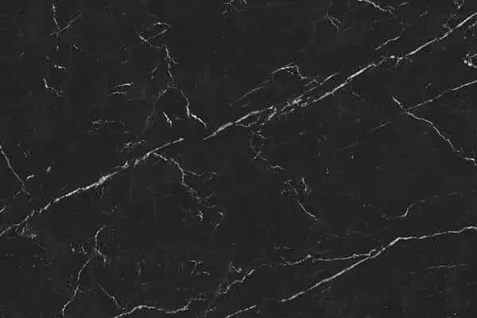
Gran formatoPavimentos y paredes de gran formato Nero Marquina - Neolith The Size
Inspirado en el marmol español, Nero Marquina pretende ser una pieza que trascienda cualquier concepto relacionado con la moda, el diseño interior o la arquitectura contemporània.
Como puedes ver, las venas blancas puras sobre el fondo negro, le dan una estética poco convencional e innovadora. Lo tienes disponible en grosores de 6 y 12 milímetros, y puede funcionar muy bien como suelo, pared, en baños, así como en encimeras de cocinas y mobiliario.